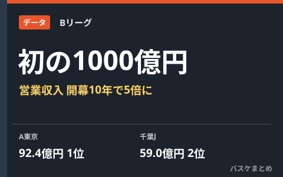

Bリーグ全体の営業収入、初の1000億円超え A東京は92.4億円でクラブ単体の過去最高

B.LEAGUEは10月13日、2025-26シーズン（2025年度）のクラブ決算概要を発表しました。B1〜B3の各クラブとリーグ分を合わせた営業収入が初めて1000億円を超え、1,013億円に到達。開幕初年度の201億円から10シーズンで約5倍に拡大した計算です。クラブ単体ではアルバルク東京が92.4億円を計上し、アリーナ運営による収入も加わる形で過去最高を更新。千葉ジェッツ、宇都宮ブレックス、琉球ゴールデンキングスが続きました。
リーグ全体で25.1%増、営業収入20億円超クラブは17に
B1〜B3のクラブ営業収入の合計は904億円で、リーグ分を合わせた全体の営業収入は1,013億円。前年度の810億円から25.1%の増加となりました。開幕初年度（2016-17シーズン）の201億円と比べると、10シーズンで約5倍の規模に拡大したことになります。営業収入が20億円を超えたクラブも、前年度の11クラブから17クラブに増え、収益基盤を強化するクラブの裾野が広がっている状況がうかがえます。
| 項目 | 2025-26シーズン | 前年度 |
|---|---|---|
| 営業収入（クラブ+リーグ） | 1,013億円 | 810億円（前年比+25.1%） |
| 開幕初年度との比較 | 201億円 → 10シーズンで約5倍 | |
| 営業収入20億円超クラブ | 17クラブ | 11クラブ |
クラブ別トップはA東京の92.4億円、アリーナ一体経営が押し上げ
クラブ単体の営業収入では、アルバルク東京が92.4億円を計上し、クラブ単体の過去最高を更新して単独トップに立ちました。本拠地「TOYOTA ARENA TOKYO」でのアリーナ運営関連収入が直接クラブの収益に加わる、いわゆる"アリーナ一体経営"が増収を押し上げた要因の一つと報じられています。2位は千葉ジェッツの59.0億円、3位は宇都宮ブレックスの40.4億円、4位は琉球ゴールデンキングスの38.6億円と続き、上位クラブが軒並み過去最高を更新する決算となりました。
| 順位 | クラブ | 営業収入 |
|---|---|---|
| 1位 | アルバルク東京 | 92.4億円（クラブ単体過去最高） |
| 2位 | 千葉ジェッツ | 59.0億円 |
| 3位 | 宇都宮ブレックス | 40.4億円 |
| 4位 | 琉球ゴールデンキングス | 38.6億円 |
新リーグ「B.PREMIER」始動と重なる節目の決算
今回の決算は、クラブを3階層に再編した新リーグ「B.PREMIER／B.ONE／B.NEXT」が9月22日に開幕した直後というタイミングでの発表です。アリーナを自前で持つクラブが収益面で存在感を増している傾向は、新リーグが掲げる経営基盤の強化という方向性とも重なります。今後、新体制下でのクラブ経営がどう推移するかは、来季以降の決算発表でも注目されそうです。
Q. 「アリーナ一体経営」とは？
A. クラブがアリーナの運営自体にも関わり、ネーミングライツや飲食・物販、イベント利用料など、試合の入場料収入以外のアリーナ関連収入もクラブの売上に直接計上できる経営形態を指します。
出典：日本経済新聞「Bリーグ総売上1000億円突破、昨季決算 アルバルク東京92億円」／B.LEAGUE公式「Bリーグ全体の営業収入が初の1000億円突破…A東京は"アリーナ一体経営"で最多92.4億円」／バスケットボールキング、同記事配信ほか
https://www.bleague.jp/media_news/detail/id=666263
https://basketballking.jp/news/japan/20261014/637544.html
https://www.nikkei.com/article/DGXZQODH07AHR0X01C26A0000000/